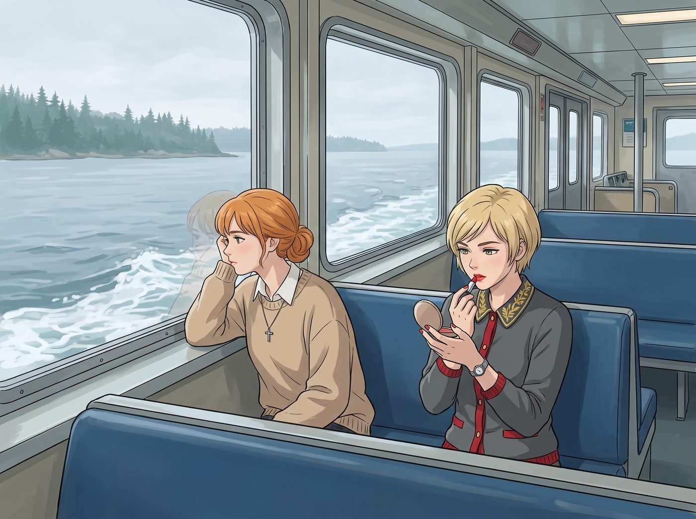

門外的戰場

二號車廂雖然是個完美的避難所，但它總給人一種「大家都是超級宅女」的錯覺。
事實上，在這個由五個女孩組成的微型社會裡，真正能夠做到大門不出、二門不邁，完全靠網路和行政指令就能活下去的終極阿宅，只有 Lily 一個人。
Chloe 和 Max 還在加州的公路上揮霍那筆一萬兩千美元。而另外兩個留在車廂的傢伙，每週有三天左右，清晨就得推開車廂那扇厚重的門，開車到港口，搭上那班開往西雅圖的渡輪，走進那個充滿泥濘與消耗的現實世界裡去肉搏。
Victoria 的招租談判、市政審批和酒會應酬都得親自到場，其他日子她就窩在車廂裡，對著筆電回郵件、開視訊會議；Kate 在危機干預中心排的是每週三個固定班次，剩下的時間才屬於她的烤箱和多肉植物。
以 Victoria 的出身，旁人大概會以為她進城搭的是私人直升機。但一來，車廂周圍全是冷杉林和泥地，根本沒有能讓直升機降落的平地，上次那台野戰廚房，也是直升機懸停在半空、用纜繩吊下來的；二來，Chase 家有錢，不代表她自己的錢包沒有底。自從決定不再伸手向家族要錢，又剛在國債上交了七十五萬美元的學費，她比任何時候都清楚，包一趟直升機的錢，夠她搭好幾個月的渡輪。
進城的那幾天裡，渡輪上的一個小時，是她們唯一安靜的時間。Victoria 會對著隨身鏡補完最後一層口紅；Kate 則靠著窗，看著灰藍色的普吉特海灣一點一點退到船尾。
一、Victoria 的戰場
西雅圖市中心，某高級商業地產的招商酒會。
Victoria 穿著一身剪裁利落的黑色女士西裝，手裡端著一杯香檳，正對著面前一個大腹便便、滿嘴雪茄味的房地產投資大佬，露出一個完美、得體、卻讓她胃部痙攣的微笑。
「所以，Chase 小姐，妳想在那個地段做獨立藝術空間？」大佬傲慢地晃著酒杯，「藝術是個賠錢貨。妳不如把那層樓租給連鎖健身房，我保證妳的租金回報率能翻倍。妳父親當年可是個精明的商人，妳怎麼沒遺傳到呢？」
Victoria 握著香檳杯的手指因為用力而骨節泛白。
如果是以前那個驕縱的大小姐，她現在已經把整杯香檳潑在這個人的臉上了。
但她不能。
自從辦完那場廢棄倉庫裡的零預算遊擊展之後，她的畫廊名聲大噪，但這也意味著，她需要實打實的現金流來撐住後續的營運。為了不再伸手向家族要錢，她接手了幾處 Chase 家族手裡沒人想管的邊緣商業地產，自己招租、自己經營。
這是一場極其殘酷的成年人遊戲。
她必須陪笑臉，必須應付那些滿嘴說教的投資人，必須在市政規劃局的辦公室裡低聲下氣地申請消防許可，必須跟難纏的租戶一分一分地討價還價。
「您說得對，先生。」Victoria 強忍著噁心，用一種專業而謙和的語氣周旋，「但藝術空間帶來的地標效應，能提升周邊店面的價值。」
「是嗎？」大佬嗤笑了一聲，「數據呢？」
Victoria 張了張嘴。她知道這是真的，她在紐約和倫敦見過太多次。但此刻，她手上沒有任何一個數字可以甩到他臉上。
一場酒會下來，她覺得自己的臉部肌肉已經因為假笑而僵硬，靈魂彷彿被抽乾了一半。那種不得不向世俗資本低頭的屈辱感，比讓她去幫 Chloe 修車還要累。
二、Kate 的戰場
而城市另一頭，Kate 的消耗，則是完全不同的另一種。
西雅圖某青少年危機干預中心。
Kate 穿著樸素的毛衣，蹲在一個因為家暴而離家出走的十四歲女孩面前，緊緊握著她發抖的手。
「沒事的，妳現在安全了。我在這裡。」Kate 溫柔地注視著女孩的眼睛，一遍又一遍地安撫著。
社工的薪水不多，但車廂裡的開銷大家分攤，Kate 從來不用為生活發愁。在這裡工作，也確實讓她找到了生命的意義。
但很多人忽略了，善良是一項極度消耗體力的重活。
在心理學上，這叫作共情疲勞。
每個班次都要面對那些破碎的靈魂、絕望的眼淚、原生家庭的傷口……Kate 就像一塊巨大的人形海綿，無條件地吸收著這個世界的苦難。她不僅要陪伴、要傾聽，還要幫忙搬運捐贈物資、打掃庇護所、處理一疊又一疊的醫療和轉介表格。
到了傍晚，當 Kate 走出干預中心時，她覺得自己的雙腿像灌了鉛一樣沉重，腦子裡嗡嗡作響，胸口彷彿壓著一塊看不見的石頭。
那個總是用微笑溫暖別人的天使，在回程的渡輪上，累得連一句話都說不出來。
三、不需要監控
晚上八點。
二號車廂的門被推開。
Victoria 踩著那雙一千美元的高跟鞋，像一具行屍走肉般走了進來。她連一句抱怨的力氣都沒有了，直接踢掉鞋子，把自己摔進沙發裡，發出一聲極度痛苦的呻吟。
緊接著，Kate 也推門進來。她臉色蒼白、腳步虛浮，朝著 Victoria 勉強擠出一個微笑，然後也一頭栽倒在沙發的另一頭。
車廂裡很安靜。
Lily 坐在她的多螢幕工作站前，回頭看了她們一眼。
她不需要任何數據。光看 Victoria 連高跟鞋都懶得擺好、Kate 連圍巾都沒解開，她就知道，今天外面的世界把這兩個人啃得很慘。
她也知道，在這種時候，任何安慰的話都是多餘的，甚至是吵鬧的。
Lily 站起身，沒有說話。
她把車廂的溫度調高了兩度，把頂燈調暗成暖橘色。她走進浴室，替 Victoria 放好一缸熱水，滴了幾滴她最喜歡的薰衣草精油。她熱了兩杯牛奶，拿了幾塊黑巧克力，想了想，把它們放在掃地機器人的背上，按下啟動鍵，讓它慢吞吞地把托盤送到沙發邊。
Victoria 閉著眼睛，摸索著拿起一塊巧克力咬了一口。溫暖的空氣和甜味一起慢慢滲進身體，她緊繃了一整天的胃，終於一點點鬆開了。
四、一頁數據
「Lily……」Victoria 氣若游絲地說，「今天那個想租我店面的投資大佬，我真的很想把他的頭塞進馬桶裡……」
「我聽到了，Victoria 學姐。」
Lily 回到工作站，敲了一會兒鍵盤。十五分鐘後，印表機吐出了一張紙。她把那張紙放在 Victoria 的熱牛奶旁邊。
「這是西雅圖、波特蘭和紐約幾個街區的公開資料。」她說，「藝術空間進駐前後，周邊店面的租金變化、步行人流，還有空置率。全部來自市政府的公開報告和已發表的研究，每一個數字都附了出處。」
Victoria 睜開一隻眼睛，拿起那張紙。上面是一張乾淨俐落的對照表，最底下用紅筆圈出了一行數字。
「下次他再問妳數據，」Lily 推了推圓框眼鏡，「您就把這張紙放在他的香檳杯旁邊。」
沙發上的 Victoria 愣了一下，然後，嘴角緩緩勾起了一抹真正發自內心的、屬於老錢名媛的殘忍微笑。
「我就知道……」她把那張紙小心地摺好，收進西裝口袋，「我愛死妳了，實習生。」
沙發另一頭的 Kate 捧著熱牛奶，感受著手心傳來的溫度。那個吸收了一整天苦難而冰冷的身體，終於一點點回暖。
「謝謝妳，Lily。」Kate 輕聲說。
「這只是營地的基礎設施維護，Kate 學姐。」Lily 坐回螢幕前，語氣一如既往地平靜，「請確保您明天早上起床時，至少有八成的電量。」
外面是殘酷的商業絞肉機，和令人窒息的人間疾苦。
但只要推開二號車廂的門，這裡就有剛好的溫度、熱騰騰的牛奶，和一個不太會說好聽話、卻總是知道該做什麼的阿宅室友。